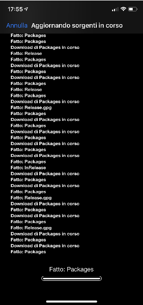

iCrackY0urApple
iCrackY0urAppleiCrackY0urApple
Welcome to iCrckY0urApple! a fantastic repository where you can install fantastic tweaks and themes to personalize your Jalibroken iPhone. Good fun!

or...
how to add:
- Open Cyida on your iPhone/iPad/iPodTouch and go to sources
 - Press edit and add
- Press edit and add

 - white: filippo-giombi.github.io/iCrackY0urApple/ and click add source
- white: filippo-giombi.github.io/iCrackY0urApple/ and click add source

- white writing will appear on a black background, don't worry, it's just adding the repository!  - the repository has been added!